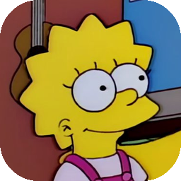

obomoboe
Save your articles to read later. Whenever.
Mac
Apple Silicon · .zip
Older Intel Mac? Get the Intel build
Windows
64-bit · .zip
If SmartScreen stops it: More info → Run anyway.
How it works
-
Download and open obomoboe.
Your reading list opens in its own window.
-
Add the button to your browser.
One drag into your bookmarks bar — obomoboe shows you where.
-
Click it on any article.
The whole thing is saved to your computer, ready whenever you are — even if the original disappears.


Yours to keep
Every article is saved on your computer, pictures and all. If the original changes, moves or disappears, your copy doesn’t.
Reads offline
Once an article is saved, it opens without a connection — on a plane, underground, anywhere.
No account, no tracking
Nothing to sign up for, no ads, no feed, nothing social. Your list lives in one file on your computer.